WHITE EYES IN BLACK SHADOW
“What I thought were comforting street lamps and house lights were actually eyes: a piercing, unwavering gaze staring into my heart.”

BASIC INFORMATION
Threshold Consciousnesses: Lison
Dreamer Classification: (R1)1-26-3
Hazard Type: Psychological
Failure Types: Escape, Ejection
VERTICE CLUSTER

CONTAINMENT GUIDELINES
GUIDELINE I: All lights and windows within (R1)1-26-3 are to remain shut at all times. Observation of (R1)1-26-3 and its Residents is to be done using the containment chamber security cameras.
GUIDELINE II: All personnel entering (R1)1-26-3’s containment chamber are required to wear night-vision goggles. Should any personnel report symptoms of Staring, they should be escorted out of the containment chamber immediately, and taken to the nearest on-site psych-ward.
GUIDELINE III: Any losses of Residents during an escape are to be logged immediately. Likewise, the reappearance of the Resident within (R1)1-26-3 is to be logged upon observation.
REPLICATION TIPS
TIP I: It’s pitch black outside. You stand in the middle of a road in the suburbs. You’re filled with an odd sense of nostalgia. The flickering street lamps and houselights are the only sources of light illuminating the path ahead.
TIP II: Your footsteps on the asphalt echo throughout the neighbourhood as you move forward. Squint and you may spot a pair of dancing lights in the distance.
TIP III: Move towards the alluring light. Light bulbs break and electricity dies, but those lights—no, eyes—still stare back at you.
TIP IV: Do not break eye contact. Look away and that light will be lost to you forever.
TIP V: Reach out. Grasp it. Imprint that gaze into your memory. Watch me. Heed me. Look at my existence. Clutch the blinding light and be swallowed in the umbra shade; replication complete.
ESCAPE INFORMATION 
Standard Hypnagogia breaching protocol is not necessary upon the confirmed breach of (R1)1-26-3.
During the event of an escape, all Residents observed within (R1)1-26-3 will appear randomly throughout the facility, particularly in the corners of rooms or dark locations.
Residents are to be sedated and transported physically back to (R1)1-26-3’s containment unit immediately. Low ranking personnel are encouraged to wear night vision goggles and face shields to mitigate the effects of Staring; personnel are to move in groups to further mitigate said effects.
In the event that the Staring of the Residents is causing disorganization or conflict between groups, personnel Level 3 or higher are permitted to neutralize the Resident with their standard issued firearm. However, this method of neutralization is discouraged due to the interruptions it will cause in future replication work.
DREAMING ALTERATION
Antumbra [Face]
Obtain Rate: During replication work, sprint towards the dancing pair of lights at the end of the road, reaching it within minutes.
Variant Dreaming: Partial uniform and firearm, stealth orientated.
Variant Waking: Ability to see in certain low-light conditions.
RESEARCH STATUS
Observations deemed insufficient. Further testing reserved for Level 1 and 2 employees.
BLACK PROJECTS
No projects proposed to date.